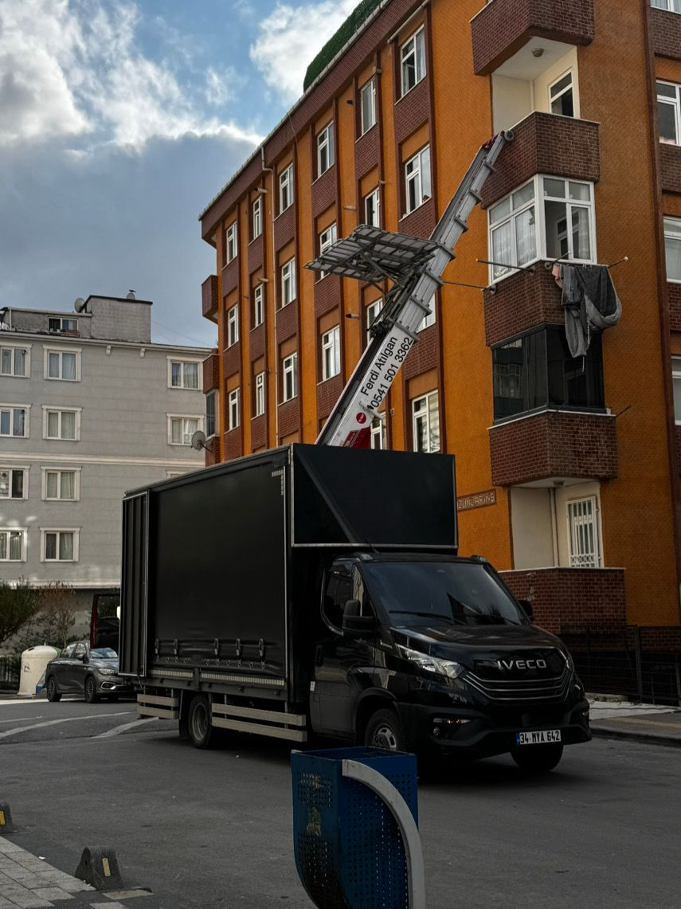
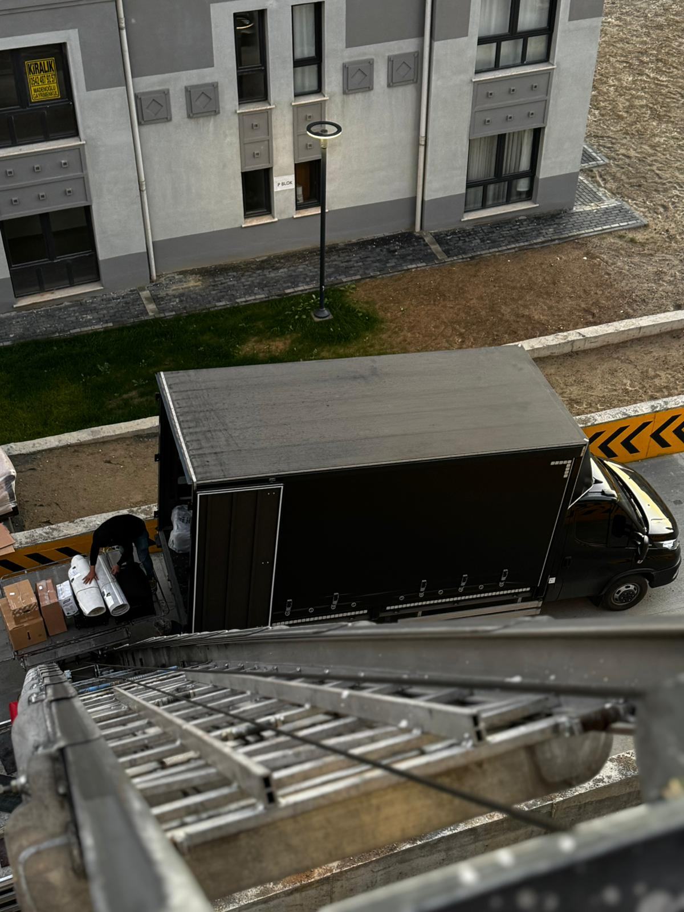
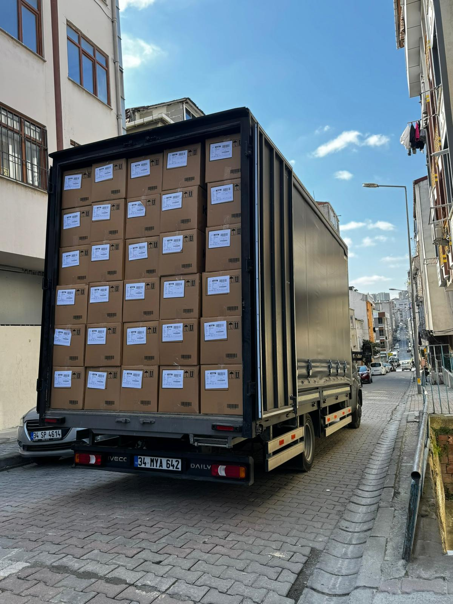
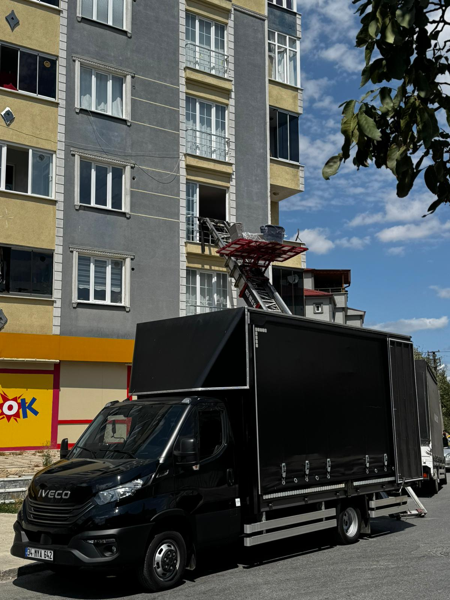
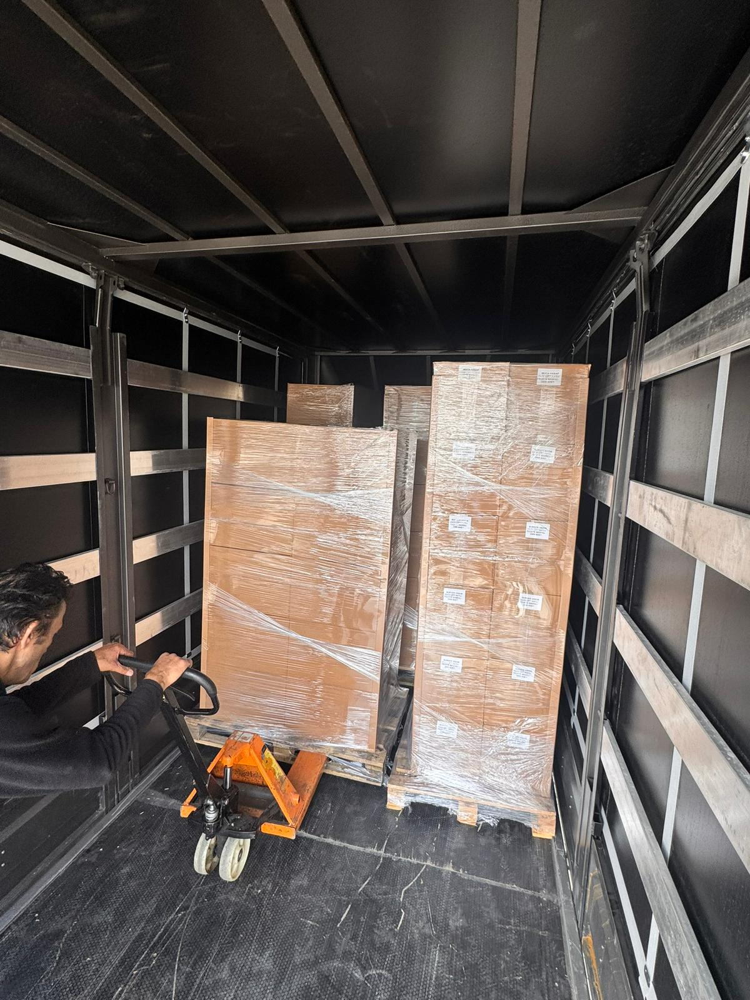
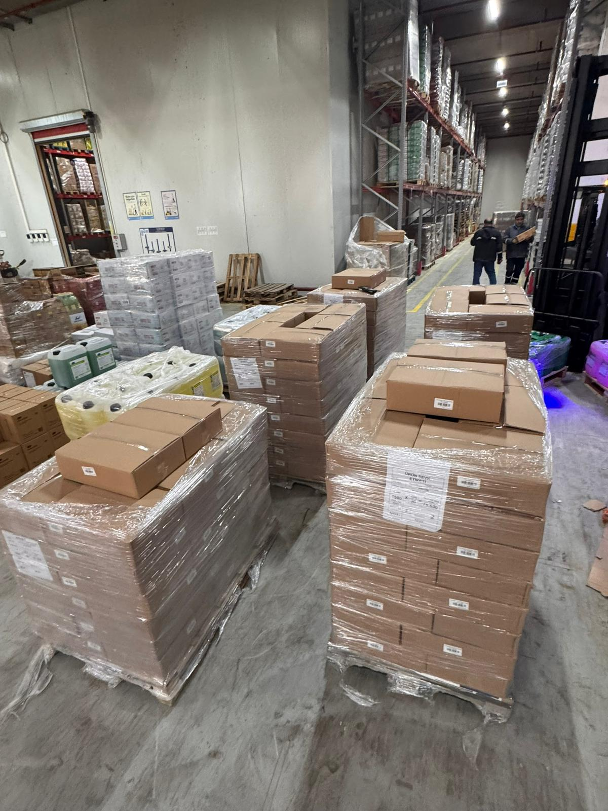
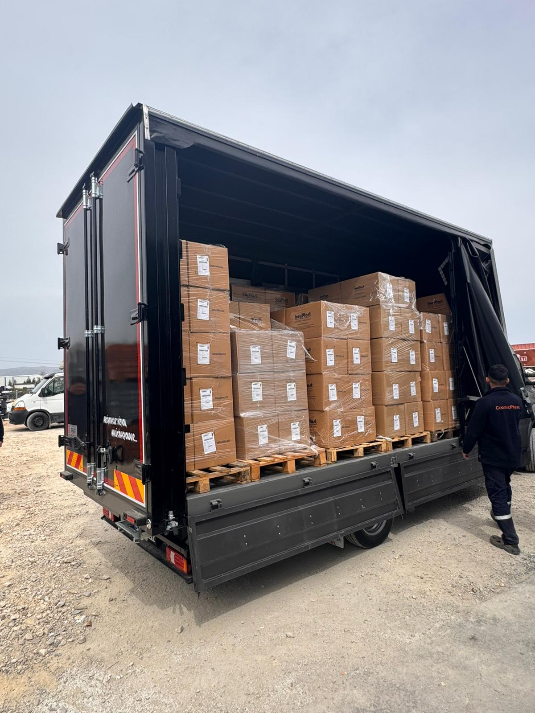
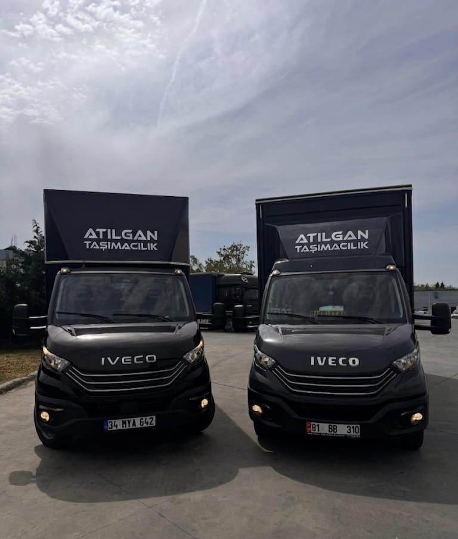

İstanbul, Gebze ve Çerkezköy Arası Bölgesel Nakliye Çözümleri ve Şehirler Arası Taşımacılık
Atılgan Taşımacılık & Lojistik olarak müşterilerimize güvenilir, hızlı ve profesyonel taşımacılık hizmetleri sunuyoruz.
İstanbul, Gebze, Silivri ve Tekirdağ / Çerkezköy hattında güçlü operasyon yapımız ile bireysel ve kurumsal müşterilerimize hizmet veriyoruz.
Müşteri memnuniyeti, zamanında teslimat ve güvenli taşıma ilkelerimiz doğrultusunda faaliyet göstermekteyiz.








İstanbul içi nakliye ile Gebze, Silivri ve Tekirdağ/Çerkezköy arasında düzenli ve güvenilir bölgesel lojistik hizmetleri sunuyoruz.
Askılı veya kolili tekstil ürünlerinizin hassasiyetine uygun, güvenli ve zamanında teslimat çözümleri sunuyoruz.
Havalandırma ekipmanları, sanayi ürünleri, makine ve üretim ekipmanlarının profesyonel taşınmasını sağlıyoruz.
Şehir içi ve şehirler arası paletli yük, parça yük ve parsiyel taşımacılık hizmetleri sunuyoruz.
Ofis ve ev eşyalarınız için planlı, güvenli ve sigortalı taşımacılık çözümleri sağlıyoruz.
Reklam ve çekim ekipmanlarınızı, fuar ürünlerinizi belirlenen noktaya taşıyor; talep halinde dönüş taşımasını da gerçekleştiriyoruz.
📞 0541 501 33 62
✉ ferdi@atilgantasimacilik.com
✉ info@atilgantasimacilik.com
✉ fatura@atilgantasimacilik.com